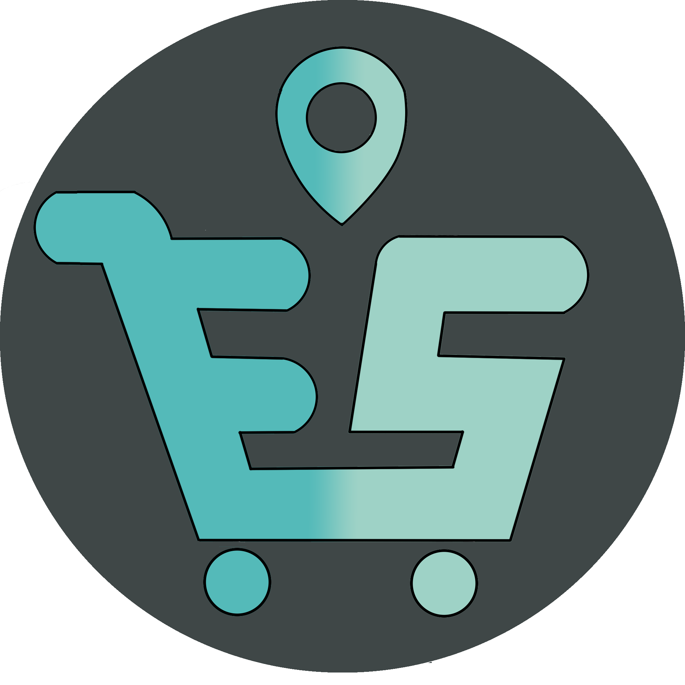

<ion-menu side="start" menuId="first" contentId="main">
  <ion-header>
    <ion-toolbar color="primary">
      <ion-avatar style="text-align: center;" slot="start">
          
      </ion-avatar>
      <ion-title>Menu Principal</ion-title>
    </ion-toolbar>
  </ion-header>
  <ion-content>
    <ion-menu-toggle>
      <ion-list>
      <ion-item routerLink="/cart">
        <ion-icon slot="start" name="cart"></ion-icon>
        <ion-label>Carrito</ion-label>
      </ion-item>
      <ion-item routerLink="/map">
        <ion-icon slot="start" name="map"></ion-icon>
        <ion-label>Mapa</ion-label>
      </ion-item>
      <ion-item routerLink="/search">
        <ion-icon slot="start" name="search-circle"></ion-icon>
        <ion-label>Buscar productos</ion-label>
      </ion-item>

      <ion-item routerLink="/historial">
        <ion-icon slot="start" name="file-tray-full-outline"></ion-icon>
        <ion-label>Historial</ion-label>
      </ion-item>

      <ion-item (click)="deslogear()" routerLink="/home">
        <ion-icon slot="start" name="exit"></ion-icon>
        <ion-label>Salir</ion-label>
      </ion-item>
    </ion-list>
    </ion-menu-toggle>
    
  </ion-content>
</ion-menu>
